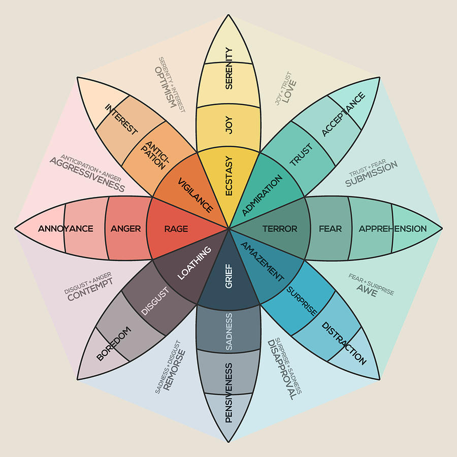

Ubisoft
Ubisoft is one of the biggest video games companies in the world and several development studios across the world. Its video game franchises include Assassin's Creed, Far Cry, Just Dance, Rabbids, Rayman, Tom Clancy's, and Watch Dogs among others.
Due to the secrecy around what we worked on and the less visual nature of our work as user researchers I will not provide many specific examples of the processes or content of the three different projects I was involved with.
Two were videogames continuation of well known sagas and the other was a long-awaited brand new game!


Despite we adjusted methodologies to meet que requiriments specification we take an overarching common process for all three projects:
- Determine with the product managers, designers and other researches the requirement specification, what parts of the game we wanted to test
- Screen and recuit participants in our database that matched the targer player of the games
- Define and prepare the playtest and/or workshops. This included protocols, structure of the playtest (what needed to be tested and how), scripts for interviews, what data should be gathered (qualitative, quantitative and biometric), etc.
- Conduct the playtest, interviews and/or survey
- Analyse and synthesise the test and/or workshops results
- Deliver and present actionable results to the rest of the stakeholders
Mario + Rabbids 2: Sparks of Hope
Mario + Rabbids 2: Sparks of Hope is a 2022 action-adventure turn-based tactic/strategy video game. Players are able create their team of characters and must rescue the sparks, who provide different powers that helps the player in battle.
I participated in this proyect with a usability test to determine if the new improvements to the battle system, the different mechanics and weaponery, the interface and the onboarding and tutorial exaplanations were clearly understood by the players. We conducted several feature- and mission-based playtest followed by semi-structured interviews.
For example we evaluated the understunding and use of real-time elements introduced within the turn-based gameplay along its explanation tutorial. Players had this time the ability to grab a Bob-omb (an exploding enemy character) move around for a few seconds and throw it to an enemy (preferably) before it explodes.
Other examples may be the understunding of area of movement (left) and use of covers (right).
Just Dance 2023
Just Dance 2023 is a dance rhythm game where players must mimic the on-screen dancer's choreography to a chosen song using either the console's controllers or the smartphone app.
I participated in this proyect with a usability test to determine if mechanics, interface and exaplanations were clearly understood by the players. We conducted several playtest followed by semi-structured interviews.
User interface
We evaluated the redesign of the user interface of the game that
- underwent a significant change that aimed to emulate the interfaces of streaming services (left)
- added a new online multiplayer feature, which also was tested
- revamped dancer cards and added emotes (right)
New features
We evaluated the understunding and of
- the online multiplayer mode
- the cross-progression feature that allowed players to set their high scores for each song and playlist, advance their player level, and unlock cosmetics
- determinethe likeliness and aestetics of the game world, its enviroment, animals and mechanics
- assess if the emotional impact players felt matched the intended emotion defined by the designers
During the playtest and interviews we also included a small apreciation evaluation for the new subscription service launched alongside 2023 Edition Just Dance+
WiLD
WiLD is a survival game set during the prehistoric Neolithic period. Within the game world, the players control a human or animals, controlled by using shamanic powers, to support them on their missions. Once an animal is controlled the gameplay moves to the controlled creature's point of view, and then proceeds using the skills and characteristics of that animal.
In this proyect I collaborated with other user researchers in an apreciation test to
We used free gameplay followed by structured interviews and relied on the Plutchik's wheel of emotions to gather that information.
